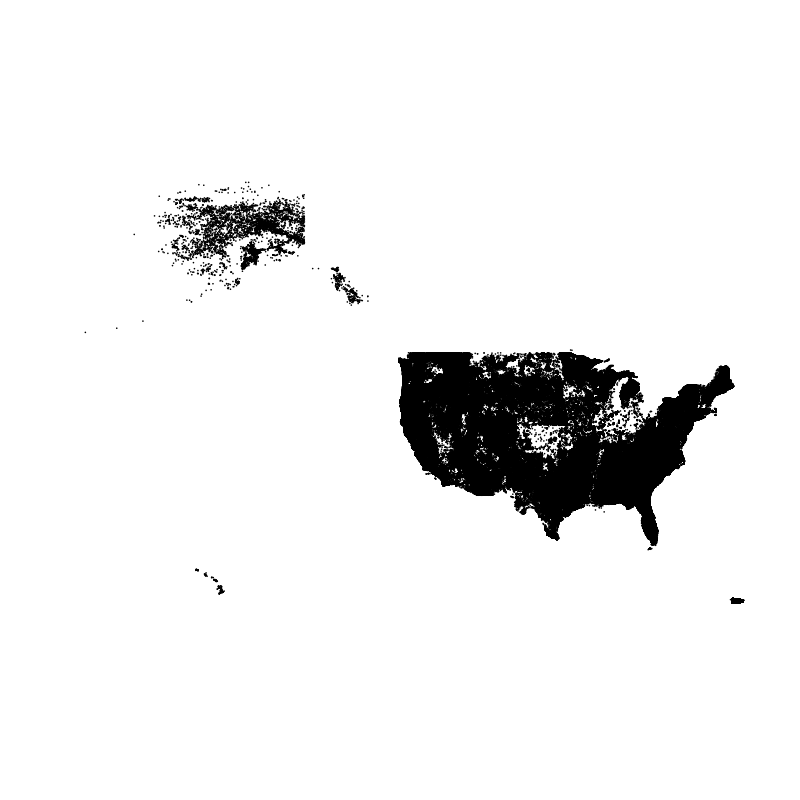

Geospatial analysis in R
NOTE: This page has been revised for Winter 2024, but may undergo further edits.
1 Introduction
The sf package (and sp before it), with its
direct links to the GDAL, GEOS, and
PROJ libraries give R a powerful
geospatial analysis capability, and at this point in the development of
packages and methods for handling spatial, practically anything that can
be accomplished in commercial or open-source GIS software can be done in
R. Because R is script-oriented, this
has the added benefit of reproducibility, inasmuch as scripts can be
saved and reused, while analysis done in menu-focused GUIs are not.
The examples here cover some of the typical things one might want to do in a GIS package.
2 Extract data from a raster
This example demonstrates how to extract data from a raster for a set
of target points contained in a .csv file. In this case, the raster is
the Ramankutty and Foley potential natural vegetation data set (https://www.nelson.wisc.edu/sage/data-and-models/global-land-use/index.php),
and the target points are the Global Charcoal Database (GCDv3) site
locations (http://www.gpwg.paleofire.org),
with the task being to “look up” the vegetation at each site. The first
example uses a function, extract() in the
{terra} package.
Load some packages:
# load packages
library(maps)
library(sf)
library(terra)
library(tidyterra)
library(classInt)
library(ggplot2)
library(RColorBrewer)Get some outlines:
# world_sf
world_sf <- st_as_sf(maps::map("world", plot = FALSE, fill = TRUE))
world_otl_sf <- st_geometry(world_sf)
plot(world_otl_sf)
# conus_sf
conus_sf <- st_as_sf(map("state", plot = FALSE, fill = TRUE))
conus_otl_sf <- st_geometry(conus_sf)
plot(conus_otl_sf)2.1 Read the data sets – source and target
Use the {terra} package to read the vegetation data,
which are stored in a netCDF file.
# read potential natural vegetation data sage_veg30.nc as a terra SpatRaster
# modify the following path to reflect local files
vegtype_path <- "/Users/bartlein/Projects/RESS/data/nc_files/"
vegtype_name <- "sage_veg30.nc"
vegtype_file <- paste(vegtype_path, vegtype_name, sep="")
vegtype <- rast(vegtype_file)
vegtype ## class : SpatRaster
## dimensions : 360, 720, 1 (nrow, ncol, nlyr)
## resolution : 0.5, 0.5 (x, y)
## extent : -180, 180, -90, 90 (xmin, xmax, ymin, ymax)
## coord. ref. : lon/lat WGS 84
## source : sage_veg30.nc
## varname : vegtype (vegetation type)
## name : vegtype
## unit : CQuick plot.
Note that the data are vegetation type, not tree-cover density, but the green scale works well.
Read the charcoal data locations:
# read GCDv3 sites
# modify the following path to reflect local files
csv_path <- "/Users/bartlein/projects/RESS/data/csv_files/"
csv_name <- "GCDv3_MapData_Fig1.csv"
csv_file <- paste(csv_path, csv_name, sep="")
gcdv3 <- read.csv(csv_file)
plot(gcdv3$Long, gcdv3$Lat, pch=16, cex=0.5, col="blue")In order to use the extract() function from
raster, the target points must be turned into a
sf object data set.
# turn the .csv file into an sf object
gcdv3_sf <- st_as_sf(gcdv3, coords = c("Long", "Lat"))
class(gcdv3_sf)## [1] "sf" "data.frame"## Simple feature collection with 736 features and 26 fields
## Geometry type: POINT
## Dimension: XY
## Bounding box: xmin: -179.56 ymin: -54.88333 xmax: 179.5 ymax: 69.3833
## CRS: NA
## First 10 features:
## Site.ID samples22k Site.Name Elev Preferred.Units Biome Region Country Site.Type
## 1 1 668 Cygnet 2530 X125 11 WNA0 US00 LGLA
## 2 2 567 Slough Creek Pond 1884 X125 11 WNA0 US00 LACU
## 3 3 367 Burnt Knob 2250 X125 11 WNA0 US00 LCIR
## 4 4 387 Baker 2300 X125 8 WNA0 US00 LCIR
## 5 5 435 Hoodoo 1770 X125 10 WNA0 US00 LACU
## 6 6 971 Pintlar 1921 X125 10 WNA0 US00 LACU
## 7 7 1801 Foy 1006 X125 7 WNA0 US00 LACU
## 8 8 790 Bolan 1637 X125 9 WNA0 US00 LACU
## 9 9 310 Bluff 1921 X125 9 WNA0 US00 LACU
## 10 10 331 Cedar 1740 X125 17 WNA0 US00 LACU
## Water.Depth..m. Basin.Size Catchment.Size Landscape
## 1 -9999.0 VESM MEDI MOUN
## 2 -9999.0 VESM SMAL MOUN
## 3 5.5 VESM SMAL MOUN
## 4 16.0 VESM SMAL MOUN
## 5 4.0 VESM SMAL MOUN
## 6 0.0 VESM SMAL MOUN
## 7 39.0 LARG SMAL MOUN
## 8 0.0 VESM SMAL MOUN
## 9 0.0 VESM SMAL MOUN
## 10 2.6 VESM SMAL MOUN
## Local.Veg
## 1 Pinus contorta
## 2 by Artemisia tridentata (sagebrush) and isolated stands of Pseudotsuga menziesii
## 3 Larix lyallii (subalpine larch), Pinus albicaulis (whitebark pine), Picea engelmannii (Engelmann spruce) and Abies bifolia (subalpine fir)
## 4 Larix lyallii (subalpine larch), Pinus albicaulis (whitebark pine), Picea engelmannii (Engelmann spruce) and Abies bifolia (subalpine fir)
## 5 Pinus contorta and Pseudotsuga menziesii
## 6 Pinus contorta and Pseudotsuga menziesii
## 7 Pseudotsuga menziesii, Pinus ponderosa, and Larix occidentalis
## 8 Pinus monticola (western white pine), P. albicaulis (whitebark pine), P. contorta (lodgepole pine), P. Jefferyi (Jeffery pine), Pseudotsuga menziesii, Abies magnifica (red fir), Abies concolor (white fir), Calocedrus decurrens (incense cedar)
## 9 Pinus monticola (western white pine), P. albicaulis (whitebark pine), P. contorta (lodgepole pine), P. Jefferyi (Jeffery pine), Pseudotsuga menziesii, Abies magnifica (red fir), Abies concolor (white fir), Calocedrus decurrens (incense cedar)
## 10 Pinus monticola (western white pine), P. albicaulis (whitebark pine), P. contorta (lodgepole pine), P. Jefferyi (Jeffery pine), Pseudotsuga menziesii, Abies magnifica (red fir), Abies concolor (white fir), Calocedrus decurrens (incense cedar)
## Regional.Veg Streams Have.Pub. Original.Dating.Type Record.Source Age.Model
## 1 Montane forest INON Yes CALO POLY
## 2 Montana forest, forest-steppe margin NOTK Yes CALO POLY
## 3 Subalpine forest NOTK Yes CALO POLY
## 4 Subalpine forest NOTK Yes CALO POLY
## 5 Montane forest INOU Yes CALO POLY
## 6 Montane forest NOTK Yes CALO POLY
## 7 Forest-steppe border NOTK Yes CALO author (mp) POLY
## 8 Diverse conifer forest NOTK Yes CALO POLY
## 9 Diverse conifer forest NOTK Yes CALO POLY
## 10 Diverse conifer forest NOTK No CALO POLY
## Data.Source Database..Source. Project Published Version ID_Status geometry
## 1 RAW0 NOTA Yes GCD1 BART POINT (-110.6161 44.6628)
## 2 RAW0 NOTA Yes GCD1 BART POINT (-110.3467 44.9183)
## 3 RAW0 NOTA Yes GCD1 BART POINT (-114.9867 45.7044)
## 4 RAW0 NOTA Yes GCD1 BART POINT (-114.2619 45.8919)
## 5 RAW0 NOTA Yes GCD1 BART POINT (-114.6503 46.3206)
## 6 RAW0 NOTA Yes GCD1 BART POINT (-113.4403 45.8406)
## 7 RAW0 NOTA No GCD1 BART POINT (-114.3592 48.1658)
## 8 RAW0 NOTA No GCD1 BART POINT (-123.46 42.02)
## 9 RAW0 NOTA No GCD1 BART POINT (-122.5575 41.3467)
## 10 RAW0 NOTA No GCD1 BART POINT (-122.4954 41.2075)Add the CRS:
Plot the target points on top of ths source map.
ggplot() +
geom_spatraster(data = vegtype) +
scale_fill_gradient(low = "darkgreen", high = "white", na.value = "transparent") +
geom_sf(data = world_otl_sf, fill = NA) +
coord_sf(xlim = c(-180, +180), ylim = c(-90, 90), expand = FALSE) +
scale_x_continuous(breaks = seq(-180, 180, 30)) +
scale_y_continuous(breaks = seq(-90, 90, 30)) +
geom_point(aes(gcdv3$Lon, gcdv3$Lat), color = "blue", size = 1.0 ) +
labs(title = "Vegetation Type", x = "Longitude", y = "Latitude", fill = "Vegetation Type") +
theme_bw()2.2 Extract data at target points
Now extract the data for the target points:
# extract data from the raster at the target points
gcdv3_vegtype <- extract(vegtype, gcdv3_sf, method="simple")
class(gcdv3_vegtype)## [1] "data.frame"## ID vegtype
## 1 1 6
## 2 2 6
## 3 3 6
## 4 4 6
## 5 5 6
## 6 6 6Make a dataframe of the extracted data that could be saved as a .csv file, and plot it:
pts <- data.frame(gcdv3$Lon, gcdv3$Lat, gcdv3_vegtype$vegtype)
names(pts) <- c("Lon", "Lat", "vegtype")
head(pts, 10)## Lon Lat vegtype
## 1 -110.6161 44.6628 6
## 2 -110.3467 44.9183 6
## 3 -114.9867 45.7044 6
## 4 -114.2619 45.8919 6
## 5 -114.6503 46.3206 6
## 6 -113.4403 45.8406 6
## 7 -114.3592 48.1658 6
## 8 -123.4600 42.0200 4
## 9 -122.5575 41.3467 6
## 10 -122.4954 41.2075 4plotclr <- rev(brewer.pal(8,"Greens"))
plotclr <- c("#AAAAAA", plotclr)
cutpts <- c(0, 2, 4, 6, 8, 10, 12, 14, 16)
color_class <- findInterval(gcdv3_vegtype$vegtype, cutpts)
plot(pts$Lon, pts$Lat, col=plotclr[color_class+1], pch=16)Plot the extracted data at the target points on top of the source points. If the extraction is successful, the target-point colors should disappear against the background.
ggplot() +
geom_spatraster(data = vegtype, show.legend = FALSE) +
scale_fill_gradient(low = "darkgreen", high = "white", na.value = "transparent") +
geom_sf(data = world_otl_sf, fill = NA) +
coord_sf(xlim = c(-180, +180), ylim = c(-90, 90), expand = FALSE) +
scale_x_continuous(breaks = seq(-180, 180, 30)) +
scale_y_continuous(breaks = seq(-90, 90, 30)) +
geom_point(aes(pts$Lon, pts$Lat, color = gcdv3_vegtype$vegtype), shape = 16, size = 1.5 ) +
geom_point(aes(pts$Lon, pts$Lat), shape = 1, size = 1.5 ) +
scale_color_gradient(low = "darkgreen", high = "white", name = "Type") +
labs(title = "Potential Natural Vegetation", x = "Longitude", y = "Latitude") +
theme_bw()Looks ok.
2.3 A second example – explicit cell selection
Here’s a second example of extracting values from an array, by
referencing the specific cell or array element that a target point falls
in. In this example, a netCDF file of bioclimatic variables is read
using ncdf4 and the values of mtco (mean
temperature of the coldest month) are extracted.
# set path and filename
# modify the following path to reflect local files
nc_path <- "/Users/bartlein/Projects/RESS/data/nc_files/"
nc_name <- "cru10min30_bio.nc"
nc_fname <- paste(nc_path, nc_name, sep="")## File /Users/bartlein/Projects/RESS/data/nc_files/cru10min30_bio.nc (NC_FORMAT_CLASSIC):
##
## 18 variables (excluding dimension variables):
## float gdd0[lon,lat]
## long_name: Growing-degree days, 0C base
## units: degdays
## _FillValue: -99
## missing_value: -99
## name: gdd0
## float gdd5[lon,lat]
## long_name: Growing-degree days, 5C base
## units: degdays
## _FillValue: -99
## missing_value: -99
## name: gdd5
## float chill[lon,lat]
## long_name: Number of days below 5C
## units: days
## _FillValue: -99
## missing_value: -99
## name: chill
## float mtco[lon,lat]
## long_name: Mean temperature coldest month
## units: C
## _FillValue: -99
## missing_value: -99
## name: mtco
## float mtwa[lon,lat]
## long_name: Mean temperature warmest month
## units: C
## _FillValue: -99
## missing_value: -99
## name: mtwa
## float alpha[lon,lat]
## long_name: Priestley-Taylor (alpha) parameter (AE/PE)
## units: ratio
## _FillValue: -99
## missing_value: -99
## name: mipt
## float aaetpt[lon,lat]
## long_name: Actual evapotranspiration (AE)
## units: mm
## _FillValue: -99
## missing_value: -99
## name: aaetpt
## float apetpt[lon,lat]
## long_name: Potential evapotranspiration (PE)
## units: mm
## _FillValue: -99
## missing_value: -99
## name: apetpt
## float alphaever[lon,lat]
## long_name: Alpha -- evergreen assimilation period
## units: ratio
## _FillValue: -99
## missing_value: -99
## name: miptever
## float aaetever[lon,lat]
## long_name: AE -- evergreen assimilation period
## units: mm
## _FillValue: -99
## missing_value: -99
## name: aaetever
## float apetever[lon,lat]
## long_name: PE -- evergreen assimilation period
## units: mm
## _FillValue: -99
## missing_value: -99
## name: apetever
## float alphadecd[lon,lat]
## long_name: Alpha -- deciduous ssimilation period
## units: ratio
## _FillValue: -99
## missing_value: -99
## name: miptdecd
## float aaetdecd[lon,lat]
## long_name: AE -- deciduous assimilation period
## units: mm
## _FillValue: -99
## missing_value: -99
## name: aaetdecd
## float apetdecd[lon,lat]
## long_name: PE -- deciduous assimilation period
## units: mm
## _FillValue: -99
## missing_value: -99
## name: apetdecd
## float totsnpt[lon,lat]
## long_name: Total snow (from surface water balance)
## units: mm
## _FillValue: -99
## missing_value: -99
## name: totsnpt
## float apr[lon,lat]
## long_name: Annual precipitation (mm)
## units: mm
## _FillValue: -99
## missing_value: -99
## name: apr
## float pjanpann[lon,lat]
## long_name: January/Annual precipitation ratio
## units: ratio
## _FillValue: -99
## missing_value: -99
## name: pjanpann
## float pjulpann[lon,lat]
## long_name: July/Annual precipitation ratio
## units: ratio
## _FillValue: -99
## missing_value: -99
## name: pjulpann
##
## 2 dimensions:
## lon Size:720
## standard_name: longitude
## long_name: longitude
## units: degrees_east
## axis: X
## lat Size:360
## standard_name: latitude
## long_name: latitude
## units: degrees_north
## axis: Y
##
## 6 global attributes:
## CDI: Climate Data Interface version 2.3.0 (https://mpimet.mpg.de/cdi)
## Conventions: CF-1.6
## source: calculated using Sarah Shafer's version of bioclim.f
## data: e:\Projects\cru\work\cl_2.0_regrid\regions\cru10min30\cru10min30_bio.dat
## history: Wed Feb 14 11:58:22 2024: cdo chname,miptever,alphaever cru10min30_bio_new2.nc cru10min30_bio.nc
## Wed Feb 14 11:57:46 2024: cdo chname,miptdecd,alphadecd cru10min30_bio_new.nc cru10min30_bio_new2.nc
## Wed Feb 14 11:56:09 2024: cdo chname,mipt,alpha cru10min30_bio.nc cru10min30_bio_new.nc
## P.J. Bartlein, 6 Dec 2007 from 2 Dec 2006 data
## CDO: Climate Data Operators version 2.3.0 (https://mpimet.mpg.de/cdo)## [1] -179.75 -179.25 -178.75 -178.25 -177.75 -177.25## [1] -89.75 -89.25 -88.75 -88.25 -87.75 -87.25## [1] 720 360# get the mtco data
mtco <- ncvar_get(ncin,"mtco")
dlname <- ncatt_get(ncin,"mtco","long_name")
dunits <- ncatt_get(ncin,"mtco","units")
fillvalue <- ncatt_get(ncin,"mtco","_FillValue")
dim(mtco)## [1] 720 360Close the netCDF file using the nc_close() function.
Plot the control data.
# levelplot of the slice
grid <- expand.grid(lon=lon, lat=lat)
cutpts <- c(-50,-40,-30,-20,-10,0,10,20,30,40,50)
levelplot(mtco ~ lon * lat, data=grid, at=cutpts, cuts=11, pretty=TRUE,
col.regions=(rev(brewer.pal(10,"RdBu"))))Now extract the data for the target points:
Get the indices (j’s and k’s) of the grid cell that each target point
lies in. For each target point, figure out which column (j)
and row (k) a target point falls in. This code is basically
the same as that used in reshaping a “short” data frame into an array.
The function that is defined and executed within the
sapply() function figures out which column (j)
and row (‘k’) in the control-data array a target point falls in. The
j’s and k’s together describe the control-data
grid cells the individual target points fall in.
j <- sapply(gcdv3$Lon, function(x) which.min(abs(lon-x)))
k <- sapply(gcdv3$Lat, function(x) which.min(abs(lat-x)))
head(cbind(j,k)); tail(cbind(j,k))## j k
## [1,] 139 270
## [2,] 140 270
## [3,] 131 272
## [4,] 132 272
## [5,] 131 273
## [6,] 134 272## j k
## [731,] 219 218
## [732,] 219 218
## [733,] 115 271
## [734,] 114 269
## [735,] 115 269
## [736,] 123 277Get the data for each j, k combination. The way to do this is the
convert the mtco array to a vector, and then calculate an
index jk for each target value:
mtco_vec <- as.vector(mtco)
jk <- (k-1)*nlon + j
gcdv3_mtco <- mtco_vec[jk]
head(cbind(j,k,jk,gcdv3_mtco,lon[j],lat[k]))## j k jk gcdv3_mtco
## [1,] 139 270 193819 -11.4 -110.75 44.75
## [2,] 140 270 193820 -10.7 -110.25 44.75
## [3,] 131 272 195251 -6.3 -114.75 45.75
## [4,] 132 272 195252 -6.4 -114.25 45.75
## [5,] 131 273 195971 -5.8 -114.75 46.25
## [6,] 134 272 195254 -6.6 -113.25 45.75gcdv3_mtco[is.na(gcdv3_mtco)] <- -99
pts <- data.frame(gcdv3$Lon, gcdv3$Lat, gcdv3_mtco)
names(pts) <- c("Lon", "Lat", "mtco")
head(pts, 20)## Lon Lat mtco
## 1 -110.6161 44.66280 -11.4
## 2 -110.3467 44.91830 -10.7
## 3 -114.9867 45.70440 -6.3
## 4 -114.2619 45.89190 -6.4
## 5 -114.6503 46.32060 -5.8
## 6 -113.4403 45.84060 -6.6
## 7 -114.3592 48.16580 -6.3
## 8 -123.4600 42.02000 3.3
## 9 -122.5575 41.34670 -0.6
## 10 -122.4954 41.20750 0.5
## 11 -122.5778 41.38360 -0.6
## 12 -122.5092 41.19130 -0.6
## 13 -110.1700 44.28000 -11.2
## 14 -123.5792 45.82420 4.4
## 15 -123.9067 46.10060 4.9
## 16 -119.9767 33.95639 -99.0
## 17 -127.0500 65.21667 -27.9
## 18 -108.1500 37.41667 -4.6
## 19 -105.5000 37.55000 -6.9
## 20 -112.2167 36.71667 -2.7Plot the extracted values of mtco. To do this, the
colors for plotting the different levels of mtco are
generated from and RColorBrewer palette, and augmented by
gray ("#AAAAAA") to handle missing values (i.e. from marine
charcoal records, or those from sites “off” the cru10min30 grid).
3 Clipping/Trimming/Point-in-polygon analyses
A common problem arises in dealing with spatial data is the “clipping” or “trimming” problem, in which one wants to know whether one or more points lie within the outlines of a particular polygon, or in the case of multiple polygons, which polygon an individual point lies in. More formally, this is known as the “point in polygon” problem. Here the process of clipping the na_10km_v2 climate grid to a tree-species shape file, in particular, that for Picea mariana (black spruce) is demonstrated. What we want is a list of climate data set points that lie withing the range of P. mariana.
3.1 Read the polygon and target-point files
Read the shapefile for Picea mariana
# read the shape file for Picea Mariana
# modify the following path to reflect local files
shp_file <- "/Users/bartlein/Projects/RESS/data/shp_files/picea_mariana/picea_mariana.shp"
picea_sf <- st_read(shp_file)## Reading layer `picea_mariana' from data source
## `/Users/bartlein/Projects/RESS/data/shp_files/picea_mariana/picea_mariana.shp' using driver `ESRI Shapefile'
## Simple feature collection with 1585 features and 5 fields
## Geometry type: POLYGON
## Dimension: XY
## Bounding box: xmin: -161.9129 ymin: 40.52763 xmax: -52.63629 ymax: 69.51231
## Geodetic CRS: WGS 84## Simple feature collection with 1585 features and 5 fields
## Geometry type: POLYGON
## Dimension: XY
## Bounding box: xmin: -161.9129 ymin: 40.52763 xmax: -52.63629 ymax: 69.51231
## Geodetic CRS: WGS 84
## First 10 features:
## AREA PERIMETER PICEMARI_ PICEMARI_I CODE geometry
## 1 921.9928589 860.791260 2 3 1 POLYGON ((-144.2306 67.7888...
## 2 1.3361486 5.519761 3 14 0 POLYGON ((-140.3131 67.1583...
## 3 5.8179188 25.570114 4 31 0 POLYGON ((-120.3523 66.7756...
## 4 0.4043011 3.741557 5 10 0 POLYGON ((-149.3351 66.8433...
## 5 0.2564854 2.388640 6 32 0 POLYGON ((-115.4912 66.5376...
## 6 0.1642477 2.184623 7 7 0 POLYGON ((-152.4227 66.2011...
## 7 0.3318646 2.666091 8 33 0 POLYGON ((-116.3629 66.2412...
## 8 0.2938177 3.306233 9 18 0 POLYGON ((-139.8788 66.2166...
## 9 0.2452402 2.254334 10 16 0 POLYGON ((-142.4661 65.8544...
## 10 30.8434772 69.847275 11 25 0 POLYGON ((-139.5941 64.5725...Plot the outline.
Read the na10km_v2 points as a .csv file (for illustration, in practice it would be more efficient to read it as a netCDF file). This file contains the grid-point locations of a present-day climate data set, and we want a list of the points that fall within the range limits of Picea mariana.
# read the na10km_v2 points (as a .csv file)
csv_file <- "/Users/bartlein/Projects/RESS/data/csv_files/na10km_v2.csv"
na10km_v2 <- read.csv(csv_file)
str(na10km_v2)## 'data.frame': 277910 obs. of 7 variables:
## $ x : num 2690000 2700000 2710000 2720000 2730000 2740000 2750000 2760000 2770000 2780000 ...
## $ y : num -4510000 -4510000 -4510000 -4510000 -4510000 -4510000 -4510000 -4510000 -4510000 -4510000 ...
## $ lon : num -77.3 -77.2 -77.1 -77 -77 ...
## $ lat : num 5.12 5.1 5.08 5.05 5.03 ...
## $ mask : int 1 1 1 1 1 1 1 1 1 1 ...
## $ etopo1: int 67 61 67 26 43 56 30 57 134 652 ...
## $ srtm30: int 78 39 52 22 79 49 32 50 110 318 ...We don’t need data from east of 45 W, so trim the data set.
## 'data.frame': 248613 obs. of 7 variables:
## $ x : num 2690000 2700000 2710000 2720000 2730000 2740000 2750000 2760000 2770000 2780000 ...
## $ y : num -4510000 -4510000 -4510000 -4510000 -4510000 -4510000 -4510000 -4510000 -4510000 -4510000 ...
## $ lon : num -77.3 -77.2 -77.1 -77 -77 ...
## $ lat : num 5.12 5.1 5.08 5.05 5.03 ...
## $ mask : int 1 1 1 1 1 1 1 1 1 1 ...
## $ etopo1: int 67 61 67 26 43 56 30 57 134 652 ...
## $ srtm30: int 78 39 52 22 79 49 32 50 110 318 ...Make an sf object of the na10km_v2 data-point locations,
and plot it:
# make an sf object
na10km_v2_sf <- st_as_sf(na10km_v2, coords = c("lon", "lat"))
st_crs(na10km_v2_sf) <- st_crs("+proj=longlat")
na10km_v2_sf## Simple feature collection with 248613 features and 5 fields
## Geometry type: POINT
## Dimension: XY
## Bounding box: xmin: -179.9993 ymin: -2.872654 xmax: -45.00111 ymax: 83.10293
## Geodetic CRS: +proj=longlat
## First 10 features:
## x y mask etopo1 srtm30 geometry
## 1 2690000 -4510000 1 67 78 POINT (-77.29202 5.124395)
## 2 2700000 -4510000 1 61 39 POINT (-77.20858 5.099891)
## 3 2710000 -4510000 1 67 52 POINT (-77.12515 5.075297)
## 4 2720000 -4510000 1 26 22 POINT (-77.04173 5.050615)
## 5 2730000 -4510000 1 43 79 POINT (-76.95832 5.025843)
## 6 2740000 -4510000 1 56 49 POINT (-76.87492 5.000983)
## 7 2750000 -4510000 1 30 32 POINT (-76.79153 4.976033)
## 8 2760000 -4510000 1 57 50 POINT (-76.70814 4.950995)
## 9 2770000 -4510000 1 134 110 POINT (-76.62476 4.925868)
## 10 2780000 -4510000 1 652 318 POINT (-76.5414 4.900651)3.2 Overlay the points onto the polygons
Now overlay the points onto the polygons. The st_join()
function can take a little while to run.
## Warning: st_crs<- : replacing crs does not reproject data; use st_transform for that## Simple feature collection with 70552 features and 10 fields
## Geometry type: POINT
## Dimension: XY
## Bounding box: xmin: -161.9001 ymin: 40.54691 xmax: -52.73005 ymax: 69.48275
## Geodetic CRS: +proj=longlat
## First 10 features:
## x y mask etopo1 srtm30 AREA PERIMETER PICEMARI_ PICEMARI_I CODE
## 101155 1860000 -780000 1 349 452 0.089939743 1.0763220 1586 1585 1
## 101552 1850000 -770000 1 286 269 0.089939743 1.0763220 1586 1585 1
## 101553 1860000 -770000 1 352 275 0.089939743 1.0763220 1586 1585 1
## 101554 1870000 -770000 1 256 189 0.089939743 1.0763220 1586 1585 1
## 101948 1850000 -760000 1 535 608 0.089939743 1.0763220 1586 1585 1
## 101949 1860000 -760000 1 517 559 0.089939743 1.0763220 1586 1585 1
## 101950 1870000 -760000 1 247 248 0.089939743 1.0763220 1586 1585 1
## 102342 1850000 -750000 1 399 486 0.089939743 1.0763220 1586 1585 1
## 102343 1860000 -750000 1 371 395 0.089939743 1.0763220 1586 1585 1
## 103450 860000 -720000 1 325 313 0.006225834 0.2851134 1571 1582 1
## geometry
## 101155 POINT (-77.76083 40.54691)
## 101552 POINT (-77.84412 40.6586)
## 101553 POINT (-77.72967 40.63295)
## 101554 POINT (-77.61531 40.60716)
## 101948 POINT (-77.81298 40.74465)
## 101949 POINT (-77.6984 40.71896)
## 101950 POINT (-77.58389 40.69314)
## 102342 POINT (-77.78172 40.83068)
## 102343 POINT (-77.667 40.80495)
## 103450 POINT (-89.43515 42.9867)The warning
although coordinates are longitude/latitude, st_intersects assumes that they are planar
arises because in fact, longitude and latitude are anisotropic, and it
would be better to do this with projected data with isotropic
coordinates (i.e. x- and y- coordinates in metres.)
4 Gridding or rasterizing point data
Another common task is to grid or rasterize a set of point data, creating a gridded data set of counts, averages, minima, maxima, etc. This can be illustrated using the FPA-FOD daily fire-fire start data set: Spatial wildfire occurrence data for the United States, 1992-2013/Fire Program Analysis Fire-Occurrence Database [FPA_FOD_20150323] (3nd Edition) (Short, K.C., 2014, Earth Syst. Sci. Data, 6, 1-27) – http://www.fs.usda.gov/rds/archive/Product/RDS-2013-0009.3/. The idea here is to calculate the number and average area of the fires that occured in 0.5-degree grid cells that cover the coterminous U.S.
4.1 Read the data sets, and create empty rasters
Read the fire-start data:
# read the FPA-FOD fire-start data
# modify the following path to reflect local files
csv_path <- "/Users/bartlein/Projects/RESS/data/csv_files/"
csv_name <- "fpafod_1992-2013.csv"
csv_file <- paste(csv_path, csv_name, sep="")
fpafod <- read.csv(csv_file) # takes a while
str(fpafod)## 'data.frame': 1727476 obs. of 14 variables:
## $ datasource : chr "fpafod" "fpafod" "fpafod" "fpafod" ...
## $ sourceid : int 1 2 3 4 5 6 7 8 9 10 ...
## $ latitude : num 40 38.9 39 38.6 38.6 ...
## $ longitude : num -121 -120 -121 -120 -120 ...
## $ year : int 2005 2004 2004 2004 2004 2004 2004 2005 2005 2004 ...
## $ mon : int 2 5 5 6 6 6 7 3 3 7 ...
## $ day : int 2 12 31 28 28 30 1 8 15 1 ...
## $ daynum : int 33 133 152 180 180 182 183 67 74 183 ...
## $ area_ha : num 0.0405 0.1012 0.0405 0.0405 0.0405 ...
## $ cause_original: int 9 1 5 1 1 1 1 5 5 1 ...
## $ cause1 : int 2 1 2 1 1 1 1 2 2 1 ...
## $ cause2 : int 8 1 5 1 1 1 1 5 5 1 ...
## $ stateprov : chr "CA" "CA" "CA" "CA" ...
## $ agency : chr "FS" "FS" "FS" "FS" ...Convert the fire-start data to an sfPOINT object…
# convert to sf
fpafod_sf <- st_as_sf(fpafod, coords = c("longitude", "latitude"), crs = "+proj=longlat +ellps=WGS84" )
fpafod_sf## Simple feature collection with 1727476 features and 12 fields
## Geometry type: POINT
## Dimension: XY
## Bounding box: xmin: -178.8026 ymin: 17.93972 xmax: -65.25694 ymax: 70.1381
## Geodetic CRS: +proj=longlat +ellps=WGS84
## First 10 features:
## datasource sourceid year mon day daynum area_ha cause_original cause1 cause2 stateprov agency
## 1 fpafod 1 2005 2 2 33 0.0404686 9 2 8 CA FS
## 2 fpafod 2 2004 5 12 133 0.1011715 1 1 1 CA FS
## 3 fpafod 3 2004 5 31 152 0.0404686 5 2 5 CA FS
## 4 fpafod 4 2004 6 28 180 0.0404686 1 1 1 CA FS
## 5 fpafod 5 2004 6 28 180 0.0404686 1 1 1 CA FS
## 6 fpafod 6 2004 6 30 182 0.0404686 1 1 1 CA FS
## 7 fpafod 7 2004 7 1 183 0.0404686 1 1 1 CA FS
## 8 fpafod 8 2005 3 8 67 0.3237488 5 2 5 CA FS
## 9 fpafod 9 2005 3 15 74 0.4046860 5 2 5 CA FS
## 10 fpafod 10 2004 7 1 183 0.0404686 1 1 1 CA FS
## geometry
## 1 POINT (-121.0058 40.03694)
## 2 POINT (-120.4044 38.93306)
## 3 POINT (-120.7356 38.98417)
## 4 POINT (-119.9133 38.55917)
## 5 POINT (-119.9331 38.55917)
## 6 POINT (-120.1036 38.63528)
## 7 POINT (-120.1533 38.68833)
## 8 POINT (-122.4339 40.96806)
## 9 POINT (-122.2833 41.23361)
## 10 POINT (-120.1492 38.54833)… and to a {terra} SpatVector
## class : SpatVector
## geometry : points
## dimensions : 1727476, 12 (geometries, attributes)
## extent : -178.8026, -65.25694, 17.93972, 70.1381 (xmin, xmax, ymin, ymax)
## coord. ref. : +proj=longlat +ellps=WGS84 +no_defs
## names : datasource sourceid year mon day daynum area_ha cause_original cause1 cause2
## type : <chr> <int> <int> <int> <int> <int> <num> <int> <int> <int>
## values : fpafod 1 2005 2 2 33 0.04047 9 2 8
## fpafod 2 2004 5 12 133 0.1012 1 1 1
## fpafod 3 2004 5 31 152 0.04047 5 2 5
## stateprov agency
## <chr> <chr>
## CA FS
## CA FS
## CA FSPlot the data. (The file is quite large, 1.7 million points, so plot to an external .png file.)
# plot the data
png(file = "fpafod_sf.png", width = 800, height = 800)
plot(st_geometry(fpafod_sf), pch = 16, cex = 0.3)
dev.off()
4.2 Rasterize the data
Now rasterize the data, first as counts (number of fires in each grid cell), and then as the average size of the fires in each grid cell. Also plot the data (both variables on a log10 scale). Begin by creating an empty raster to hold the fire-counts data.
# create (empty) fire counts raster
cell_size <- 0.5
lon_min <- -128.0; lon_max <- -65.0; lat_min <- 25.5; lat_max <- 50.5
ncols <- ((lon_max - lon_min)/cell_size)+1; nrows <- ((lat_max - lat_min)/cell_size)+1
us_fire_counts <- rast(nrows=nrows, ncols=ncols, xmin=lon_min, xmax=lon_max, ymin=lat_min, ymax=lat_max, res=cell_size, crs="+proj=longlat +datum=WGS84")
us_fire_counts## class : SpatRaster
## dimensions : 50, 126, 1 (nrow, ncol, nlyr)
## resolution : 0.5, 0.5 (x, y)
## extent : -128, -65, 25.5, 50.5 (xmin, xmax, ymin, ymax)
## coord. ref. : +proj=longlat +datum=WGS84 +no_defsRasterize the fire-count data. Note the function used to bin the data
is count() (fun = "mean").
# rasterize
us_fire_counts <- rasterize(fpafod_vec, us_fire_counts, field = "area_ha", fun="count")
us_fire_counts## class : SpatRaster
## dimensions : 50, 126, 1 (nrow, ncol, nlyr)
## resolution : 0.5, 0.5 (x, y)
## extent : -128, -65, 25.5, 50.5 (xmin, xmax, ymin, ymax)
## coord. ref. : +proj=longlat +datum=WGS84 +no_defs
## source(s) : memory
## name : count
## min value : 1
## max value : 8755## [1] 50 126 1Plot the data:
# plot
plot(log10(us_fire_counts), col=brewer.pal(9,"BuPu"), sub="log10 Number of Fires")
plot(conus_otl_sf, add = TRUE)Create a second empty raster.
# create (empty) fire area raster
cell_size <- 0.5
lon_min <- -128.0; lon_max <- -65.0; lat_min <- 25.5; lat_max <- 50.5
ncols <- ((lon_max - lon_min)/cell_size)+1; nrows <- ((lat_max - lat_min)/cell_size)+1
us_fire_area <- rast(nrows=nrows, ncols=ncols, xmin=lon_min, xmax=lon_max, ymin=lat_min, ymax=lat_max, res=cell_size, crs="+proj=longlat +datum=WGS84")
us_fire_area## class : SpatRaster
## dimensions : 50, 126, 1 (nrow, ncol, nlyr)
## resolution : 0.5, 0.5 (x, y)
## extent : -128, -65, 25.5, 50.5 (xmin, xmax, ymin, ymax)
## coord. ref. : +proj=longlat +datum=WGS84 +no_defsRasterize the fire-area data. Note the function is now the
mean() (fun = "mean").
# rasterize
us_fire_area <- rasterize(fpafod_vec, us_fire_area, field = "area_ha", fun="mean")
us_fire_area## class : SpatRaster
## dimensions : 50, 126, 1 (nrow, ncol, nlyr)
## resolution : 0.5, 0.5 (x, y)
## extent : -128, -65, 25.5, 50.5 (xmin, xmax, ymin, ymax)
## coord. ref. : +proj=longlat +datum=WGS84 +no_defs
## source(s) : memory
## name : mean
## min value : 4.046860e-03
## max value : 1.821087e+04## [1] 50 126 14.3 Write the rasterized data out as a netCDF file
Write the two rasterized data sets out as variables in a netCDF data
set. Create some variables, and replace the R NAs with
netCDF fillvalues:
# make necessary vectors and arrays
lon <- seq(lon_min+0.25, lon_max-0.25, by=cell_size)
lat <- seq(lat_max-0.25, lat_min+0.25, by=-1*cell_size)
print(c(length(lon), length(lat)))## [1] 126 50## [1] 126 50## [1] "matrix" "array"us_fire_counts2[is.na(us_fire_counts2)] <- fillvalue
us_fire_area2 <- t(terra::as.array(us_fire_area)[,,1])
dim(us_fire_area2)## [1] 126 50## [1] "matrix" "array"Write out a netCDF file:
# write out a netCDF file
library(ncdf4)
# path and file name, set dname
# modify the following path to reflect local files
nc_path <- "/Users/bartlein/Projects/RESS/data/nc_files/"
nc_name <- "us_fires.nc"
nc_fname <- paste(nc_path, nc_name, sep="")# create and write the netCDF file -- ncdf4 version
# define dimensions
londim <- ncdim_def("lon", "degrees_east", as.double(lon))
latdim <- ncdim_def("lat", "degrees_north", as.double(lat))
# define variables
dname <- "fpafod_counts"
dlname <- "Number of fires, 1992-2013"
v1_def <- ncvar_def(dname,"1",list(londim,latdim),fillvalue,dlname,prec="single")
dname <- "fpafod_mean_area"
dlname <- "Average Fire Size, 1992-2013"
v2_def <- ncvar_def(dname,"ha",list(londim,latdim),fillvalue,dlname,prec="single")
# create netCDF file and put arrays
ncout <- nc_create(nc_fname, list(v1_def, v2_def), force_v4=TRUE)
# put variables
ncvar_put(ncout,v1_def,us_fire_counts2)
ncvar_put(ncout,v2_def,us_fire_area2)
# put additional attributes into dimension and data variables
ncatt_put(ncout,"lon","axis","X")
ncatt_put(ncout,"lat","axis","Y")
# add global attributes
ncatt_put(ncout,0,"title","FPA-FOD Fires")
ncatt_put(ncout,0,"institution","USFS")
ncatt_put(ncout,0,"source","http://www.fs.usda.gov/rds/archive/Product/RDS-2013-0009.3/")
ncatt_put(ncout,0,"references", "Short, K.C., 2014, Earth Syst. Sci. Data, 6, 1-27")
history <- paste("P.J. Bartlein", date(), sep=", ")
ncatt_put(ncout,0,"history",history)
ncatt_put(ncout,0,"Conventions","CF-1.6")
# Get a summary of the created file:
ncout## File /Users/bartlein/Projects/RESS/data/nc_files/us_fires.nc (NC_FORMAT_NETCDF4):
##
## 2 variables (excluding dimension variables):
## float fpafod_counts[lon,lat] (Contiguous storage)
## units: 1
## _FillValue: 1.00000003318135e+32
## long_name: Number of fires, 1992-2013
## float fpafod_mean_area[lon,lat] (Contiguous storage)
## units: ha
## _FillValue: 1.00000003318135e+32
## long_name: Average Fire Size, 1992-2013
##
## 2 dimensions:
## lon Size:126
## units: degrees_east
## long_name: lon
## axis: X
## lat Size:50
## units: degrees_north
## long_name: lat
## axis: Y
##
## 6 global attributes:
## title: FPA-FOD Fires
## institution: USFS
## source: http://www.fs.usda.gov/rds/archive/Product/RDS-2013-0009.3/
## references: Short, K.C., 2014, Earth Syst. Sci. Data, 6, 1-27
## history: P.J. Bartlein, Wed Feb 28 20:34:35 2024
## Conventions: CF-1.65 Interpolating/regridding
Another common task involves tranferring values from one gridded data
set to another. When the grids are identical, this is trivial, but when
the “target” grid is different from the source or “control” grid, this
involves interpolation (as does also the case when the target points are
irregularly distributed). The most widely used method for interpolation
within a control grid is bilinear interpolation, which involves
finding the control grid points that surround a particular target point,
and then simultaneously (linearlly) interplating in the x- and
y-directions. The method is implemented in the raster
package, and relatively fast version is implemented in the
fields package.
The example here uses a lower-resolution verions of the ETOPO1 global DEM as the source file, and the locations of the (land-only) points in the na10km_v2 grid as the targets. These are read in here from a .csv file, but they also could have come from a netCDF file.
5.1 Open the “control” netCDF and target .csv files
Load the appropriate packages.
Read the etopo1 netCDF file. This particular file is one in which the original 30-sec data have been aggregated (by averaging) to six minutes or one-tenth of a degree (to speed up the execution of the examples). In practice, one would work with the original higher resolution data. Do some setup an open the file, and list its contents.
# set path and filename
# modify the following path to reflect local files
nc_path <- "/Users/bartlein/Projects/RESS/data//nc_files/"
nc_name <- "etopo1_ig_06min.nc"
nc_fname <- paste(nc_path, nc_name, sep="")
dname <- "elev"Read the netCDF file as as {terra} SpatRaster:
## class : SpatRaster
## dimensions : 1800, 3600, 1 (nrow, ncol, nlyr)
## resolution : 0.1, 0.1 (x, y)
## extent : -180, 180, -90, 90 (xmin, xmax, ymin, ymax)
## coord. ref. : lon/lat WGS 84
## source : etopo1_ig_06min.nc
## varname : elev (elevation)
## name : elev
## unit : mGet the “control” longitudes and latitudes.
## File /Users/bartlein/Projects/RESS/data//nc_files/etopo1_ig_06min.nc (NC_FORMAT_CLASSIC):
##
## 1 variables (excluding dimension variables):
## short elev[lon,lat]
## long_name: elevation
## units: m
## valid_min: -10360
## valid_max: 6365
## scale_factor: 1
## add_offset: 0
## _FillValue: -32768
## source: z in etopo1_ig.nc -- averaged
##
## 2 dimensions:
## lon Size:3600
## standard_name: longitude
## long_name: longitude
## units: degrees_east
## axis: X
## lat Size:1800
## standard_name: latitude
## long_name: latitude
## units: degrees_north
## axis: Y
##
## 7 global attributes:
## title: 1-Minute Gridded Global Relief Data (ETOPO1)
## data: grid-registered data -- ETOPO1_Ice_g.grd
## institution: http://www.ngdc.noaa.gov/ngdc.html
## source: http://www.ngdc.noaa.gov/mgg/global/global.html
## history: This file created by P.J. Bartlein, 28 Nov 2008
## comment: average over 7x7 1-min cells
## Conventions: CF-1.0## [1] -179.95 -179.85 -179.75 -179.65 -179.55 -179.45## [1] -89.95 -89.85 -89.75 -89.65 -89.55 -89.45## [1] 3600 1800Produce a quick map to check that the data make sense. (Always do this!)
Open and read the .csv file containing the “target” points.
# read na10km_v2 grid-point locations -- land-points only
# modify the following path to reflect local files
csv_path <- "/Users/bartlein/Projects/RESS/data/csv_files/"
csv_name <- "na10km_v2_pts.csv"
csv_file <- paste(csv_path, csv_name, sep="")
na10km_v2 <- read.csv(csv_file)
str(na10km_v2)## 'data.frame': 277910 obs. of 5 variables:
## $ x : num 2690000 2700000 2710000 2720000 2730000 2740000 2750000 2760000 2770000 2780000 ...
## $ y : num -4510000 -4510000 -4510000 -4510000 -4510000 -4510000 -4510000 -4510000 -4510000 -4510000 ...
## $ lon : num -77.3 -77.2 -77.1 -77 -77 ...
## $ lat : num 5.12 5.1 5.08 5.05 5.03 ...
## $ mask: int 1 1 1 1 1 1 1 1 1 1 ...Get the number of target points:
## [1] 2779105.2 Interpolation
Set up to do the interpolation. Make a “target-point” dataframe:
… and do the interpolation:
# bilinear interpolation using terra::extract()
na10km_v2_interp <- extract(etopo1_raster, targ_df, method = "bilinear", layer = "elev", bind = TRUE)
head(na10km_v2_interp)## layer value
## 1 elev 64.91837
## 2 elev 87.74857
## 3 elev 69.43258
## 4 elev 52.84844
## 5 elev 54.49635
## 6 elev 54.86496Assemble an output dataframe:
# assemble an output dataframe
na10km_v2_interp_df <- data.frame(na10km_v2$x, na10km_v2$y, targ_df, na10km_v2_interp$value)
names(na10km_v2_interp_df) <- c("x", "y", "lon", "lat", "elev")
head(na10km_v2_interp_df)## x y lon lat elev
## 1 2690000 -4510000 -77.29202 5.124395 64.91837
## 2 2700000 -4510000 -77.20858 5.099891 87.74857
## 3 2710000 -4510000 -77.12515 5.075297 69.43258
## 4 2720000 -4510000 -77.04173 5.050615 52.84844
## 5 2730000 -4510000 -76.95832 5.025843 54.49635
## 6 2740000 -4510000 -76.87492 5.000983 54.86496Get a quick map:
# ggplot of the interpolated data
library(ggplot2)
ggplot(data = na10km_v2_interp_df, aes(x = x, y = y)) +
geom_tile(aes(fill = elev)) +
scale_fill_gradientn(colors = terrain.colors(12)) +
theme_bw()At this point, interp_mat could be written out as a
variable in a netCDF file (along with dimension and attribute data). It
is also possible to make a data frame of the interpolated data, which
could be written out as a .csv file. The map isn’t great–it’s projected,
but the axes are in x- and y- locations in meters.
Make an sf POINT object:
# make an sf object
NA_10km_v2_elev_sf <- st_as_sf(na10km_v2_interp_df, coords = c("x", "y"))
NA_10km_v2_elev_sf## Simple feature collection with 277910 features and 3 fields
## Geometry type: POINT
## Dimension: XY
## Bounding box: xmin: -5730000 ymin: -4510000 xmax: 5e+06 ymax: 4480000
## CRS: NA
## First 10 features:
## lon lat elev geometry
## 1 -77.29202 5.124395 64.91837 POINT (2690000 -4510000)
## 2 -77.20858 5.099891 87.74857 POINT (2700000 -4510000)
## 3 -77.12515 5.075297 69.43258 POINT (2710000 -4510000)
## 4 -77.04173 5.050615 52.84844 POINT (2720000 -4510000)
## 5 -76.95832 5.025843 54.49635 POINT (2730000 -4510000)
## 6 -76.87492 5.000983 54.86496 POINT (2740000 -4510000)
## 7 -76.79153 4.976033 53.95471 POINT (2750000 -4510000)
## 8 -76.70814 4.950995 66.25254 POINT (2760000 -4510000)
## 9 -76.62476 4.925868 170.84757 POINT (2770000 -4510000)
## 10 -76.54140 4.900651 564.78603 POINT (2780000 -4510000)# add (projected) CRS
st_crs(NA_10km_v2_elev_sf) <-
st_crs("+proj=laea +lon_0=-100 +lat_0=50 +x_0=0 +y_0=0 +ellps=WGS84 +datum=WGS84 +units=m +no_defs")
NA_10km_v2_elev_sf## Simple feature collection with 277910 features and 3 fields
## Geometry type: POINT
## Dimension: XY
## Bounding box: xmin: -5730000 ymin: -4510000 xmax: 5e+06 ymax: 4480000
## Projected CRS: +proj=laea +lon_0=-100 +lat_0=50 +x_0=0 +y_0=0 +ellps=WGS84 +datum=WGS84 +units=m +no_defs
## First 10 features:
## lon lat elev geometry
## 1 -77.29202 5.124395 64.91837 POINT (2690000 -4510000)
## 2 -77.20858 5.099891 87.74857 POINT (2700000 -4510000)
## 3 -77.12515 5.075297 69.43258 POINT (2710000 -4510000)
## 4 -77.04173 5.050615 52.84844 POINT (2720000 -4510000)
## 5 -76.95832 5.025843 54.49635 POINT (2730000 -4510000)
## 6 -76.87492 5.000983 54.86496 POINT (2740000 -4510000)
## 7 -76.79153 4.976033 53.95471 POINT (2750000 -4510000)
## 8 -76.70814 4.950995 66.25254 POINT (2760000 -4510000)
## 9 -76.62476 4.925868 170.84757 POINT (2770000 -4510000)
## 10 -76.54140 4.900651 564.78603 POINT (2780000 -4510000)## [1] "sf" "data.frame"Here’s a better version (written to a .png file in the working directory):
# ggplot2 map
png(file = "NA_10km_v2_elev_sf.png", width = 600, height = 600)
pal <- rev(brewer.pal(9, "Greys"))
ggplot() +
geom_sf(data = NA_10km_v2_elev_sf, aes(color = elev), size = 0.0001) +
coord_sf(crs = st_crs(NA_10km_v2_elev_sf), xlim = c(-5770000, 5000000), ylim = c(-4510000, 4480000)) +
scale_color_gradientn(colors = pal) +
labs(x = "Longitude", y = "Latitude") +
scale_x_discrete(breaks = seq(160, 360, by=10)) +
scale_y_discrete(breaks = seq(0, 90, by=10)) +
theme_bw()
dev.off()
Another approach is to reproject the control data (on a longitude by latitude grid) into the coordiate system of the target grid (Lambert Azimuthal Equal Area). Make a raster of the target points. Note that the extent of the grid (i.e. edges) is specified, not the grid-cell centers.
# make a raster of projected na10km_v2 point, note extent
res <- 10000
xmin <- -5770000 - res/2; xmax <- 5000000 + res/2; ymin <- -4510000 - res/2; ymax <- 4480000 + res/2
ncols <- ((xmax - xmin)/10000) + 1; nrows <- ((ymax - ymin)/10000) + 1
newcrs <- "+proj=laea +lon_0=-100 +lat_0=50 +x_0=0 +y_0=0 +ellps=WGS84 +datum=WGS84 +units=m +no_defs"
NA_10km_v2_raster <- rast(ncols = ncols, nrows = nrows, xmin = xmin, xmax = xmax,
ymin = ymin, ymax = ymax, resolution = res, crs = newcrs)
NA_10km_v2_rasterNow do the projection:
# project etopo1_raster onto NA_10km_v2_raster
NA_10km_v2_raster_proj <- project(etopo1_raster, NA_10km_v2_raster)
NA_10km_v2_raster_proj## class : SpatRaster
## dimensions : 900, 1078, 1 (nrow, ncol, nlyr)
## resolution : 10000, 10000 (x, y)
## extent : -5775000, 5005000, -4515000, 4485000 (xmin, xmax, ymin, ymax)
## coord. ref. : +proj=laea +lat_0=50 +lon_0=-100 +x_0=0 +y_0=0 +datum=WGS84 +units=m +no_defs
## source(s) : memory
## name : elev
## min value : -8276.586
## max value : 3712.906
## unit : m## [1] "SpatRaster"
## attr(,"package")
## [1] "terra"Note that this approach also interpolates bathymetry.
Here’s a {ggplot2} map.
# ggplot2 map
png(file = "NA_10km_v2_elev_raster_proj.png", width = 600, height = 600)
pal <- rev(brewer.pal(9, "Greys"))
ggplot() +
geom_spatraster(data = NA_10km_v2_raster_proj, aes(fill = elev)) +
coord_sf(crs = st_crs(NA_10km_v2_raster_proj), xlim = c(-5770000, 5000000), ylim = c(-4510000, 4480000)) +
scale_fill_gradientn(colors = grey(0:100 / 100), na.value = "transparent") +
labs(x = "Longitude", y = "Latitude") +
scale_x_discrete(breaks = seq(0, 360, by=10)) +
scale_y_discrete(breaks = seq(0, 90, by=10)) +
theme_bw()## <SpatRaster> resampled to 500778 cells for plotting